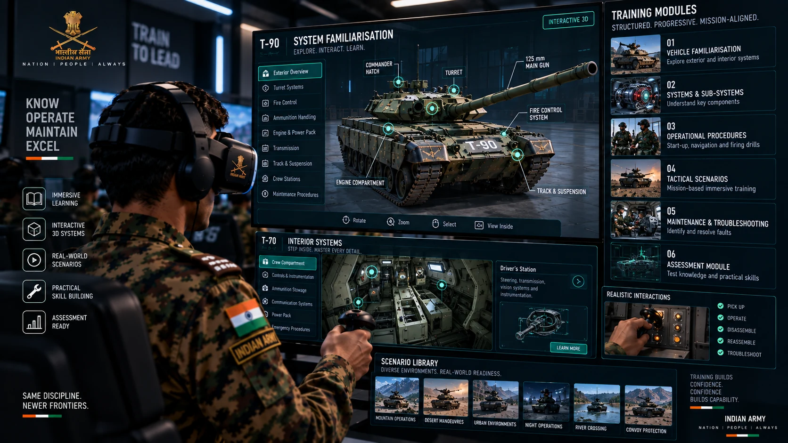

20 Content development
The experience was built around the training.
My role extended beyond the visual layer.
I was involved in shaping the experience and content that trainees encountered inside the immersive environment, translating requirements into a structured training journey and coordinating its development through iteration and stakeholder feedback.
